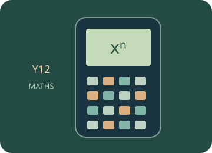

Number and algebra
Use powers, logarithms, sequences, equations and financial calculations.
Start with the mathematical explanations and worked examples below, then choose a guided calculator exercise. The trainer highlights the next physical key; afterwards, repeat in free practice and interpret your result.

Build the idea, one step at a time.
Algebra expresses relationships between quantities so they can be manipulated and solved. Powers describe repeated factors, logarithms undo exponentiation, and sequences describe ordered patterns. A symbol is meaningful only after its quantity, domain and any units are defined.
An equation asks for values that make two sides equal. A numerical solver can find a candidate in a region, but it does not automatically prove that all solutions have been found or that each is valid in the original domain. Financial and sequence models also require careful interpretation of time periods and rates.
01 · Powers and logarithms undo each other
If bˣ = a with b > 0 and b ≠ 1, then log_b(a) = x. A logarithm asks for an exponent, so its real input must be positive. Exponent and logarithm rules follow from products and powers; they do not turn a sum into a sum of logarithms.
02 · Recognise arithmetic and geometric change
An arithmetic sequence has a constant difference between successive terms. A geometric sequence has a constant ratio when that ratio is defined. Identify the starting term and whether the index counts terms or elapsed periods before selecting a formula.
03 · Solve a model and respect its context
Numerical solving can provide a value where an expression is zero or two expressions are equal. Check the original domain, inspect relevant intervals and substitute to verify. The practical interpretation may require an inequality or whole-number answer after solving the equality.
You can read these explanations without operating the simulator. The practical activities, games and revision below let you apply the ideas and check your reasoning.
Now investigate →Use the calculator, one key at a time.
Loading the calculator exercises…
Related manual procedures
The source trainer contains 42 skill pages. Reviewed procedures and outlines awaiting physical-device verification are labelled separately. A guided simulator example does not certify every menu on a physical calculator.
Practise, then explain.
Predict the result, follow the highlighted keys and interpret the calculator’s answer. This is practice: calculator actions are not sent to the teacher dashboard. These calculator activities support the examples and explanations in your class lessons.
Open the free calculator →